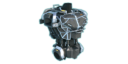

护甲 (LWOTC)
Jump to navigation
Jump to search

在Long War of the Chosen中，可用的护甲与原版相似，但有一些区别:
- 中型护甲不再提供额外槽位（所有士兵默认拥有3个装备槽），取而代之的是提供最佳防护力，所有中型护甲比原版多提供1点护甲值。每件中型护甲都必须单独制造。
- 轻型护甲提供的生命值和闪避显著减少，但仍提供相同的机动性加成、抓钩，并且“幽灵护甲”拥有相位能力。
- 重型护甲提供的生命值和护甲低于同阶中型护甲，但仍提供重型武器槽，并且“W.A.R. 护甲”拥有盾墙能力。技术兵穿戴重型护甲时无法装备额外的重型武器，但可以额外装备一枚火箭或两次额外的火焰喷射器使用次数。
- 英雄护甲作为独立物品存在，与基础士兵护甲分开。其成本和属性与基础士兵的中型护甲相同，获得方式也相同。
士兵护甲
| 名称 |
HP加成 |
护甲 |
特殊属性 |
前置条件 |
消耗 |
黑市价值 |
|||
|---|---|---|---|---|---|---|---|---|---|
|
补给 |
合金 |
超铀水晶 |
超铀核心 |
||||||

凯夫拉护甲 |
0 | 0 | - | XCOM 初始拥有无限供应 | |||||

掠食者护甲 |
+3 | 1 | - | 战斗护甲 | 30 | 5 | 0 | 0 | 20 |

蜘蛛护甲 |
+1 | 0 |
+1 移动力, +5 闪避
攀爬爪钩 |
移动护甲 | 50 | 5 | 1 | 0 | 20 |
|
E.X.O.护甲 |
+2 | 0 | 重武器槽位 | 重型护甲 | 60 | 6 | 1 | 0 | 20 |
|
守望护甲 |
+8 | 2 | - | 动力护甲 | 80 | 10 | 10 | 0 | 30 |

幽灵护甲 |
+3 | 0 |
+2 移动力, +15 闪避
攀爬爪钩 幽灵 |
暗影护甲 | 100 | 9 | 15 | 1 | 40 |

W.A.R.护甲 |
+5 | 1 |
重武器槽位
盾墙 |
重型套甲 | 100 | 10 | 10 | 1 | 30 |
外星猎手DLC护甲
如果安装了《外星猎手》DLC，则还会提供独特的裁决者护甲，并进行相应的属性调整。获取规则保持一致：在杀死裁决者并完成对应的试验场项目后，每种护甲只能获得一件，且在升级时会消耗原有护甲。
| 名称 |
HP加成 |
护甲 |
特殊属性 |
前置条件 |
消耗 | ||
|---|---|---|---|---|---|---|---|
|
补给 |
合金 |
超铀水晶 |
|||||
|
毒蛇护甲 |
+4 | 0 |
+1 移动力, +20 闪避
攀爬爪钩 寒霜之咬 10% 几率使毒蛇怪陷入恐慌 |
毒蛇护甲 | 在项目完成时获得 | ||
|
毒蛇装甲 |
+5 | 0 |
+2 移动力, +20 闪避
攀爬爪钩 寒霜之咬 10% 几率使毒蛇怪陷入恐慌 |
毒蛇护甲
动力护甲 |
75 | 10 | 10 |
|
R.A.G.E.护甲 |
+6 | 1 |
重武器槽位
狂怒之击 10% 几率使异变者和狂战士陷入恐慌 |
R.A.G.E.护甲 | 在项目完成时获得 | ||
|
R.A.G.E.装甲 |
+7 | 2 |
重武器槽位
狂怒之击 10% 几率使异变者和狂战士陷入恐慌 |
R.A.G.E.护甲
动力护甲 |
75 | 15 | 5 |
|
伊卡洛斯装甲 |
+5 | 1 |
+1 移动力
飞跃 伊卡洛斯之跃 x2 10% 几率使执政官陷入恐慌 |
伊卡洛斯装甲 | 在项目完成时获得 | ||
SPARK护甲
SPARK拥有其专属的护甲。在默认护甲之后，每个科技等级都可以在轻型、中型和重型护甲之间进行选择。
| 名称 |
HP加成 |
护甲 |
特殊属性 |
前置条件 |
消耗 |
黑市价值 |
|||
|---|---|---|---|---|---|---|---|---|---|
|
补给 |
合金 |
超铀水晶 |
超铀核心 |
||||||

SPARK装甲 |
0 | 0 | XCOM 初始拥有无限供应 | ||||||
|

加固骨架 |
+1 | 2 |
+5 防御
+1 移动力 +5 护盾 子弹槽位 |
重型护甲 | 50 | 5 | 0 | 1 | 20 |
|
阳极氧化机身 |
+2 | 3 |
+10 防御
+2 移动力 +7 护盾 子弹槽位 |
重型套甲 | 100 | 10 | 10 | 2 | 25 |
|
轻型SPARK骨架 |
0 | 1 |
+15 防御
+2 移动力 +3 护盾 奉献精神 |
重型护甲 | 50 | 5 | 0 | 1 | 20 |
|
轻型SPARK机身 |
0 | 2 |
+20 防御
+4 移动力 +5 护盾 奉献精神 |
重型套甲 | 100 | 10 | 10 | 2 | 25 |
|
重型SPARK骨架 |
+2 | 3 |
+15 闪避
+8 护盾 -1 移动力 高级衬垫（2HP） |
重型护甲 | 50 | 5 | 0 | 1 | 20 |
|
重型SPARK机身 |
+4 | 4 |
+5 防御
+15 闪避 +10 护盾 -1 移动力 高级衬垫（4HP） |
重型套甲 | 100 | 10 | 10 | 2 | 25 |
多功能护甲
除护甲外，士兵还可以在工具槽中装备 背心装备 ，以提升自身的生存能力。